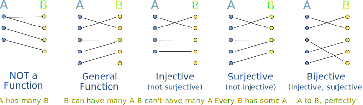

Injective, Surjective and Bijective
"Injective, Surjective and Bijective" tells us about how a function behaves.
A function is a way of matching the members of a set "A" to a set "B":

Let's look at that more closely:
A General Function points from each member of "A" to a member of "B".
It never has one "A" pointing to more than one "B", so one-to-many is not OK in a function (so something like "f(x) = 7 or 9" is not allowed)
But more than one "A" can point to the same "B" (many-to-one is OK)
Injective means we won't have two or more "A"s pointing to the same "B".
So many-to-one is NOT OK (which is OK for a general function).
As it is also a function one-to-many is not OK
But we can have a "B" without a matching "A"
Injective is also called "One-to-One"
Surjective means that every "B" has at least one matching "A" (maybe more than one).
There won't be a "B" left out.
Bijective means both Injective and Surjective together.
Think of it as a "perfect pairing" between the sets: every one has a partner and no one is left out.
So there is a perfect "one-to-one correspondence" between the members of the sets.
(But don't get that confused with the term "One-to-One" used to mean injective).
Bijective functions have an inverse!
If every "A" goes to a unique "B", and every "B" has a matching "A" then we can go back and forwards without being led astray.
Read Inverse Functions for more.
On A Graph
So let us see a few examples to understand what is going on.
When A and B are subsets of the Real Numbers we can graph the relationship.
Let us have A on the x axis and B on y, and look at our first example:

This is not a function because we have an A with many B. It is like saying f(x) = 2 or 4
It fails the "Vertical Line Test" and so is not a function. But is still a valid relationship, so don't get angry with it.
Now, a general function can be like this:

A General Function
It CAN (possibly) have a B with many A. For example sine, cosine, etc are like that. Perfectly valid functions.
But an "Injective Function" is stricter, and looks like this:

"Injective" (one-to-one)
In fact we can do a "Horizontal Line Test":
To be Injective, a Horizontal Line should never intersect the curve at 2 or more points.
(Note: Strictly Increasing (and Strictly Decreasing) functions are Injective, you might like to read about them for more details)
So:
- If it passes the vertical line test it is a function
- If it also passes the horizontal line test it is an injective function
Formal Definitions
OK, stand by for more details about all this:
Injective
A function f is injective if and only if whenever f(x) = f(y), x = y.
Example: f(x) = x+5 from the set of real numbers  to
to  is an injective function.
is an injective function.
Is it true that whenever f(x) = f(y), x = y ?
Imagine x=3, then:
- f(x) = 8
Now I say that f(y) = 8, what is the value of y? It can only be 3, so x=y
Example: f(x) = x2 from the set of real numbers  to
to  is not an injective function because of this kind of thing:
is not an injective function because of this kind of thing:
- f(2) = 4 and
- f(-2) = 4
This is against the definition f(x) = f(y), x = y, because f(2) = f(-2) but 2 ≠ -2
In other words there are two values of A that point to one B.
BUT if we made it from the set of natural
numbers  to
to  then it is injective, because:
then it is injective, because:
- f(2) = 4
- there is no f(-2), because -2 is not a natural number
So the domain and codomain of each set is important!
Surjective (Also Called "Onto")
A function f (from set A to B) is surjective if and only if for every y in B, there is at least one x in A such that f(x) = y, in other words f is surjective if and only if f(A) = B.
In simple terms: every B has some A.
Example: The function f(x) = 2x from the set of natural
numbers  to the set of non-negative even numbers is a surjective function.
to the set of non-negative even numbers is a surjective function.
BUT f(x) = 2x from the set of natural
numbers  to
to  is not surjective, because, for example, no member in
is not surjective, because, for example, no member in  can be mapped to 3 by this function.
can be mapped to 3 by this function.
Bijective
A function f (from set A to B) is bijective if, for every y in B, there is exactly one x in A such that f(x) = y
Alternatively, f is bijective if it is a one-to-one correspondence between those sets, in other words both injective and surjective.
Example: The function f(x) = x2 from the set of positive real numbers to positive real numbers is both injective and surjective. Thus it is also bijective.
But the same function from the set of all real numbers  is not bijective because we could have, for example, both
is not bijective because we could have, for example, both
- f(2)=4 and
- f(-2)=4